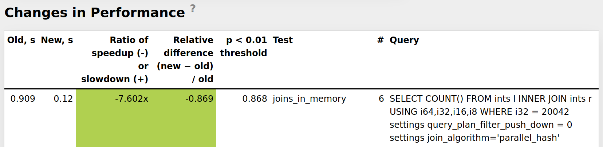

1. (40 min) What's new in ClickHouse 24.11.
2. (15 min) Guest Talk.
2. (5 min) Q&A.
ClickHouse Autumn Release.
— 9 new features 🦃
— 15 performance optimizations ⛸️
— 68 bug fixes 🏕️
clickhouse-local --query "SELECT 1"
clickhouse-local --queries-file script.sql
clickhouse-local < script.sql
ch -q "SELECT 1"
ch < script.sql
ch "SELECT 1"
ch script.sql
It automatically disambiguates between the query and file arguments.
Developer: Raul Marin.
SELECT arrayMap(x -> x * 2, range(10)) AS arr,
isConstant(arr) -- returns 1 here
Allows using higher-order functions where a constant expression is required.
Improves query performance.
Demo
Developer: Alexey Milovidov.
Demo
Developer: Alexey Milovidov.
WITH FILL — a modifier for ORDER BY for filling missing values in a sequence.
Used for reports and time-series analysis.
ORDER BY expr [WITH FILL] [FROM const_expr]
[TO const_expr]
[STEP const_numeric_expr]
[STALENESS const_numeric_expr],
... exprN [WITH FILL] [FROM const_expr]
[TO const_expr]
[STEP const_numeric_expr]
[STALENESS const_numeric_expr]
[INTERPOLATE [(col [AS expr], ... colN [AS exprN])]]
Developer: Mikhail Artemenko.
ClickHouse already has support for gaps filling in ORDER BY:
SELECT EventDate, count() FROM ... GROUP BY EventDate ORDER BY EventDate
┌──EventDate─┬─count()─┐
│ 2014-03-17 │ 3 │
│ 2014-03-19 │ 6 │
│ 2014-03-21 │ 7 │
│ 2014-03-22 │ 6 │
└────────────┴─────────┘
... ORDER BY EventDate WITH FILL STEP 1
┌──EventDate─┬─count()─┐
│ 2014-03-17 │ 3 │
│ 2014-03-18 │ 0 │
│ 2014-03-19 │ 6 │
│ 2014-03-20 │ 0 │
│ 2014-03-21 │ 7 │
│ 2014-03-22 │ 6 │
└────────────┴─────────┘
ClickHouse already has support for gaps filling in ORDER BY:
ORDER BY x WITH FILL STEP 1
By irregular intervals:
ORDER BY date WITH FILL STEP INTERVAL 1 MONTH
With custom start or end:
ORDER BY x WITH FILL FROM 0 TO 5.51 STEP 0.5
By multiple keys:
ORDER BY x ASC WITH FILL STEP 0.1,
y DESC WITH FILL STEP -1
New in 24.11: staleness specification!
Demo
Developers: Mikhail Artemenko.
Probe for a grant in a non-intrusive way.
CHECK GRANT SELECT ON system.query_log
Useful for implementation of database UIs.
Demo
Developer: Unalian.
Allow to reliably detect errors even after
the result has been streamed to the client.
Demo
Developer: Sema Checherinda.
$ cat config.d/handlers.yaml
http_handlers:
rule:
methods: GET
url: '/report'
handler:
user: ivan
type: predefined_query_handler
query: "SELECT count() FROM data WHERE user = {name:String}"
curl 'https://example.clickhouse/report?name=abc'
Developer: Azat Khuzhin.
By removing one unnecessary copying.
Demo
Developer: Nikita Taranov.
ReplacingMergeTree table engine allows deduplication of records in the background, keeping the latest version of a record for each primary key.
If a SELECT query has the FINAL modifier after a table,
it performs merge on SELECT.
This operation is optimized in version 24.11,
by special processing for the case of non-intersecting ranges.
Developer: Anton Popov.
Developer: Anton Popov.
Marks — part of tables' index, which map primary keys to offsets in every column's file.
Marks can take a considerable amount of memory, and they are selectively loaded into the cache.
A new server configuration option, mark_cache_prewarm_ratio,
enabled by default as 95%.
The server will eagerly bring marks to the cache in memory
on every insert, merge or fetch of data parts, until it is close to full.
A new system command, SYSTEM PREWARM MARK CACHE t,
to load all marks into cache now.
Developer: Anton Popov.
Parallel Replicas allow to speed up queries by spreding the work across replicas, in addition to shards.
Enable as follows: SET enable_parallel_replicas = 1;
In version 24.11, the query plan is generated on the head node,
and other replicas don't spend time for query analysis.
No latency increase for short queries!
Demo
Developer: Igor Nikonov.
Server configuration:
$ cat config.d/resources.yaml
resources:
network_read:
node:
@path: "/"
type: inflight_limit
max_requests: 100
node:
@path: "/fair"
type: fair
node
@path: "/fair/prod"
type: fifo
weight: 3
node:
@path: "/fair/dev"
type: fifo
network_write:
node:
@path: "/"
type: inflight_limit
max_requests: 100
node:
@path: "/fair"
type: fair
node
@path: "/fair/prod"
type: fifo
weight: 3
node:
@path: "/fair/dev"
type: fifo
Developer: Sergei Trifonov.
Server configuration:
$ cat config.d/workloads.yaml
workload_classifiers:
production:
network_read: "/fair/prod"
network_write: "/fair/prod"
development:
network_read: "/fair/dev"
network_write: "/fair/dev"
default:
network_read: "/fair/dev"
network_write: "/fair/dev"
SET workload = 'production';
Developer: Sergei Trifonov.
New in 24.11: dynamic configuration with SQL:
CREATE RESOURCE network_write (WRITE DISK s3);
CREATE RESOURCE network_read (READ DISK s3);
CREATE WORKLOAD all SETTINGS max_requests = 100;
CREATE WORKLOAD development IN all;
CREATE WORKLOAD production IN all SETTINGS weight = 3;
CREATE OR REPLACE WORKLOAD all SETTINGS max_requests = 100,
max_speed = 1000000 FOR network_read, max_speed = 2000000
FOR network_write;
Developer: Sergei Trifonov.
It is named "Brain" Float16 or simply, bf16.
It has the same range of the exponent as Float32 (single precision float), but less bits for mantissa.
— 16-bit floating point data type for low-precision calculations;
— supports hardware acceleration (AVX-512), but it is fast even without it;
— used for AI and vector search;
The natural use — vectors: Array(BFloat16)
for searching with vector distances.
— cosineDistance, dotProduct, L1/L2/LinfDistance
are optimized for BFloat16;
Example: nearest neighbor search with a full scan over 28 million
384-dimensional vectors on a single machine, AWS c7a.metal-48xl.
clickhouse-benchmark --query "WITH
[-0.02925783360957671,-0.03488947771094666,-0.043594286234016795,0.008421758650019697,-0.00304723808145266,-0.04101494423248483,-0.023899359041147154,-0.0015317200543317083,-0.018438475901011615,0.0007393409942359616,-0.006081216740158369,0.02693221430894178,0.023456996636463518,-0.022037954396850228,-0.008597156750866666,0.020134312036277364,0.019235188748958618,-0.03204817926680196,-0.00019114769774305853,-0.01878043584800045,-0.03822019436502928,-0.04881583359042268,-0.016513585722992684,-0.008285208987632745,0.0006223661023437281,-0.012855400042633483,-0.03845208232614872,0.004884533965684012,0.0031115829355526058,-0.04770094600756321,-0.009591568847122433,0.022149313813592544,0.004572342669546123,0.02544618134871326,-0.007428305489676339,0.012692912462479557,0.007277151805692606,-0.009058192559758073,-0.034761812158015964,-0.02990110972285378,0.008485905993445328,-0.02383933480752018,-0.026673946097854655,0.013901606349396684,-0.01685863802910708,-0.0107260470120412,-0.03076476082272714,-0.0016413968849696239,-0.0207587933604608,0.02581552053933088,-0.06784335386613845,-0.015549691834111312,-0.0033516372953142437,-0.0012679002569906366,0.005212048635971193,0.03260537411646059,-0.014039709882916144,-0.017840458697707184,-0.014631946667399582,0.00831042831263238,0.03151659122588714,-0.025244333994677768,-0.015184502824404597,0.023783769087007425,0.03667866808813323,0.011543228030740304,-0.0009955809604768162,0.017765939851548364,0.015663610528635744,-0.033993097542645366,-0.04309127460378628,0.00038173845621881886,-0.04296257521585634,0.031185803601898165,-0.02075648552136494,0.0034034880880611175,-0.01019295228031018,-0.013521408081483112,0.019550848092887173,-0.019602123189379476,-0.009262470918417191,0.005230952840823904,-0.03461715699527463,0.03304742173578754,0.023732340025237737,-0.009248941092478298,0.015908781837367412,0.0026924583361369473,-0.00048662581533755894,-0.02955664414494078,0.041963471021078134,0.030897039715920283,0.04545942599561337,-0.002042951716674092,-0.0027811942824563355,0.009823306531437002,-0.0007339370004357461,-0.004137288742202525,0.017082023010099673,0.009498470609293043,-0.0008482901448081017,0.02942868705708383,-0.0013432653498671018,-0.01935626907811332,-0.05002937920438419,-0.048785643329089114,0.010504324390801458,0.04127433122221886,-0.007190762825731961,0.0010615074530123379,-0.005900764186855704,0.013167022480583362,-0.012689946261163456,-0.05296003411508099,-0.004096678699980099,-0.01456086697711242,-0.03835111642248012,-0.02414370482822634,0.04432575181059653,0.0051557339747961,0.035303380932769364,0.007472243431122155,-0.026809071594814084,-0.01423507924831781,0.0348685546062706,0.008865512713374903,-0.014889661246125802,2.5541185566737512e-33,0.022436709256185034,0.016526347329138852,-0.0027569241065327796,-0.04287207244434339,0.02324500272965924,-0.0014302196903263034,-0.015476080981440514,-0.0008040691214644577,-0.05155087398283137,0.007605530381845336,-0.006529396154682645,0.03623922698045784,-0.0038264691026384298,0.001655594384680968,0.04075551445379197,-0.03531244173579032,-0.0032084454102014916,0.06147612726377777,0.003789425297888784,-0.013500334546036904,0.044157135411628384,-0.0074719127538711875,-0.004819537343094184,0.027805751867371428,0.05748559195826103,0.01998423282241136,-0.00532267550600614,0.008750345480945446,0.029275127176968556,0.019518132452909086,-0.0032462401103030853,-0.02891187957903874,-0.0545628980431381,0.013427525410647876,0.015953578289199924,0.0032191274910228058,-0.04261204495905545,-0.0490539003253947,0.0040203106906750346,-0.008661587925934085,-0.02523006699637904,0.01879838032703194,0.00934487051076966,-0.032491920557733284,-0.03956282197732917,-0.000021386446442993933,0.003997863892060834,-0.007714113456540995,-0.00970519049576779,-0.012111031141563889,0.008241814476674672,0.0019682444973454644,-0.0009580417891825413,0.031065010163608374,0.02979441532013337,0.012248849986591322,0.021012828142280955,-0.020523598412619127,0.033872141349669094,0.07632376434346737,-0.039294121654742706,-0.017059655416579472,0.0054912719229589365,-0.01748057409973693,0.0014939812201963066,0.014037937702408592,0.018673973959625462,0.01912698746798602,0.02275797325752923,0.031012920410056856,0.02556435465277152,0.00050726792668825,0.04988415950285028,-0.01826204047584362,0.016755717516159646,-0.02493252812048817,-0.02670480526468289,0.0021176992749053943,-0.005386274913786128,-0.006108971833111676,-0.005191753602520582,-0.03178975805439396,-0.013585343903394187,0.013919775698062867,-0.0019171885804667307,-0.02585099285396497,0.022140001404531776,0.006346321826246764,-0.05166748348164965,0.010230211341905894,-0.005511126321173957,0.026129870562540552,0.005591155731881511,-0.005989732741238507,-0.03309988584586981,-3.3061050786593106e-33,-0.027425221837755805,-0.027747928185818546,0.006969839629030185,0.045276318250854916,0.005850341763457841,0.015280154489335559,0.0052384069291514955,-0.02582237394886411,0.0045554454757196884,0.0018900565381320018,-0.0060848716348543535,-0.007374401576649682,0.004367279556562316,-0.027663305763285757,-0.007183225435495162,0.02088255884405309,0.019703563225772717,-0.06331589022736665,-0.04085452660503199,-0.005085488642429513,-0.009692944097604605,0.03070910064786378,-0.02237455155918005,0.028199946763862498,0.029082118768683447,-0.000467514841811462,-0.02597950689447751,0.008562874681544754,0.004371022492620395,0.0012978462624528445,-0.010413244393422384,-0.016153340672225645,-0.026395679162840316,-0.029203883828285676,0.008515853873267434,0.004668927899589436,0.02256885853739119,0.022146505486933046,-0.0030893442310520047,0.008372903834134741,0.03672896972242391,-0.009415049223030138,-0.016225609576927043,0.0005941188828107589,-0.004060009178125633,0.03541802760190184,-0.061720954118713214,0.041225131202793724,-0.006876589688543575,0.006530009190027283,-0.006525361982424411,0.0023283869871553384,0.023164345033513674,-0.027439710425559403,-0.007675539402666469,0.008826228914663585,-0.00034449465726799295,0.010179555587477226,-0.032824307224928316,0.005117448513719913,-0.00869254046266184,-0.027480833721075203,0.004596555048243376,0.03543657522986627,0.01344110916459871,-0.021738301390264878,0.020502318697584072,-0.004367209616161528,-0.04729847836258812,-0.008486656179218172,0.008295604910597753,-0.00553104455473181,0.006869951053878154,-0.01083615890838815,-0.006448483531365819,-0.0013327384626983204,0.023557081055448383,0.002792539193838005,0.015153452017665017,0.01648241656381379,-0.001180904538363138,0.03771942021176286,0.0479300769727078,-0.005000308758486313,0.021344371508181043,0.007555471999304635,-0.01289042736414522,-0.0006454117321689603,-0.001951421474617875,0.00009261694237228353,-0.04638045110471165,0.0014459808346181974,-0.033755255275659486,0.0355076327073151,0.006331972088346799,-4.085171059851751e-8,-0.0070015315739613655,-0.005350205347758633,0.013849886735066142,0.01528022129687766,0.02340828554381793,-0.025316197060296263,0.0035750749725965585,0.08100486519308853,0.004524656088632822,0.030927224956646977,0.055660756985989115,-0.020326749762220632,-0.03940666675139202,0.019152030040847215,0.031554666169570145,-0.00013144400978238327,0.02215064814362779,-0.027177521093729264,-0.028084434696070696,-0.009094041312801228,0.0026188180024626015,0.04904385170793062,-0.0012694680519395333,-0.007400149551470432,0.007020551292936971,0.011503762010776129,0.005320105216359621,0.03612296785305774,0.020269220622937525,-0.03667989325009266,0.002103437538202668,0.0060059027235891405,-0.00018611092451769067,-0.005309291204030945,0.010338820376486148,0.007844060900397699,-0.0018594366735096783,0.02373650410318846,-0.02894649447777843,0.009696771513740972,0.02167578934552106,-0.010799014621212584,-0.014191152378983682,0.014048337936401367,-0.00585928160332391,-0.010390869690722854,-0.04471569434009151,-0.010836177973305976,0.03768398348319027,-0.0036899034546391983,0.001344386096591898,-0.015457357170339758,0.01648902036216167,0.010547022720981266,0.03502700817231541,0.01746345798067434,0.006882214214174146,-0.024958244391850064,0.054744115736927945,0.0436044918391636,0.043087398052644,-0.019251900863133352,-0.0035404458521511354,0.032484047621093616]::Array(BFloat16)
AS center SELECT d FROM (SELECT cosineDistance(vector, center) AS d
FROM hackernews_llama_memory ORDER BY d LIMIT 10
) SETTINGS allow_experimental_bfloat16_type = 1"
BFloat16: 0.061 sec, 301 GB/sec. Float32: 0.146 sec, 276 GB/sec.Developer: Alexey Milovidov.
Iceberg, DeltaLake, and Hudi got their Cluster variants (e.g., IcebergCluster)
Now you can query your data lakes with the resources
of a distributed cluster.
Developer: Mikhail Artemenko.
The Official Tableau connector for ClickHouse
is published on Tableau Exchange
ClickHouse is available as an official data source for Power BI
Continuous replication from PostgreSQL in ClickHouse Cloud in preview.
ClickHouse OpenTelemetry exported is in beta.
Improvements for dbt, Spark, Kafka, and Metabase integrations
as well as for Java, Python, and JavaScript connectors.
ClickHouse now has the Docker Official Image:
https://hub.docker.com/_/clickhouse
docker run -it clickhouse/clickhouse-server
docker run -it clickhouse
— Docker Official Images belong to a curated set of Docker
open source and "drop-in" solution repositories.
Developer: Mikhail Shiryaev.
$ pip install chdb
import chdb
res = chdb.query("SELECT 'Hello, Python!' AS x", "Arrow")
frame = chdb.to_df(res)
frame.info()
"chDB is an embedded OLAP SQL engine powered by ClickHouse"
Similar to clickhouse-local, but embedded into your app.
Works with local and remote datasets, Pandas dataframes,
and your own data types.
Integrates with Python functions as UDFs.
— 🇫🇷 Paris, Nov 26th
— 🇺🇸 AWS re:Invent, Las Vegas, Dec 2nd..6th
— 🇺🇸 House Party, Las Vegas, Dec 3rd
— 🇳🇱 Amsterdam, Dec 3rd
— 🇺🇸 New York, Dec 9th
— 🇸🇪 Stockholm, Dec 9th
— 🇲🇾 Kuala Lumpur, Dec 11th
— 🇺🇸 San Francisco, Dec 12th
I will be in person on some of these meetups :)
— The evolution of SQL-based observability;
— PostgreSQL replication into ClickHouse;
— ClickHouse for AI with Weights&Biases;
— ClickHouse for security with Huntress;
— ClickHouse for observability with Temporal;
— OpenTelemetry with ClickHouse;
— Attentive, Skool, Tydo;